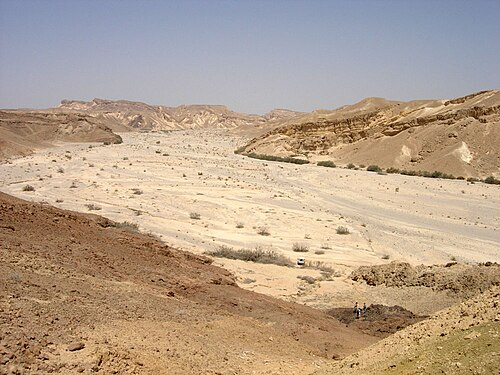
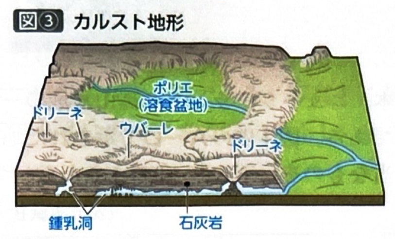

第1章 地形・地形図 - その他の地形
ポイント総復習
1. 氷河地形
雪が圧縮されて形成された氷の塊（氷河）が、自重で移動しながら侵食・運搬・堆積を行って形成する地形です。大陸を広く覆う「大陸氷河（氷床）」と、山地に分布する「山岳氷河」があります。
大陸氷河は現在、南極大陸とグリーンランドにしかありませんが、約1万年前まで続いた氷期には、ヨーロッパ北部や北米大陸の北部などにも広く分布していました。そのため、これらの地域には現在でも氷河によって削られたやせ地や氷河地形が多くみられます。
- カール（圏谷）：山頂付近が氷食によって削られてできたお椀状の凹地。
- ホルン（尖峰）：カールが多方面に形成された結果、削り残されて尖った山頂。（例：マッターホルン）
- U字谷（氷食谷）：氷河が谷を流れ下る際に深く削り取って形成されたU字型の谷。これが海に沈むとフィヨルドになる。
- モレーン：氷河が運搬してきた岩屑（がんせつ）が末端部などに堆積してできた丘陵。
- 氷河湖：氷食による凹地や、モレーンによって水がせき止められてできる湖。（五大湖やフィンランドの湖沼群など）

2. 乾燥地域の地形
乾燥地域は昼夜の寒暖差が激しいため岩盤の風化が進みやすく、植生に乏しいため風による侵食・運搬・堆積作用が活発です。
- 砂漠の種類：一般的には砂の砂漠をイメージしがちですが、実際には岩石砂漠や礫（れき）砂漠が多くを占めます。
- 湖と河川：蒸発が激しいため、海まで到達しない内陸河川や、塩分濃度が高い塩湖（カスピ海や死海、アラル海など）が多くみられます。
- 外来河川：湿潤地域を源流として、乾燥地域を貫いて流れる河川（ナイル川など）。乾燥地域における貴重な水源となり、周囲に集落や農地が形成されます。
- ワジ（涸れ川）：普段は水がなく、降雨の時だけ水が流れる川の跡。移動の目印（交通路）になったり、地下水が得やすいため付近に集落が形成されることがあります。

3. カルスト地形
石灰岩が二酸化炭素を含む雨水や地下水によって溶食されてできた地形です。語源はスロベニアのカルスト地方です。日本では山口県の秋吉台などが有名で、周辺では石灰石を利用したセメント工業が発達しています。
- 凹地の発達：すり鉢状の小さな凹地をドリーネといい、これらが連結するとウバーレ、さらに巨大な盆地状になったものをポリエ（溶食盆地）といいます。規模が大きくなる順番（ドリーネ→ウバーレ→ポリエ）を覚えましょう。
- 鍾乳洞：地表水は地下に浸透しやすいため、地表の河川はほとんどみられず、地下に水が流れて洞窟を形成します。
- タワーカルスト：温暖多雨な地域で溶食が激しく進み、石灰岩が塔のように残った地形。中国の桂林が世界的に有名です。

基礎問題（理解度チェック）
Q1. 氷河地形について、空欄を埋めなさい。
山頂付近が氷河の侵食によって削り取られてできるお椀状の凹地を
といい、これらが多方面に形成されることで削り残された尖った山頂を
という。また、氷河が谷を削りながら流れ下ることで形成される谷を
といい、氷河が運んできた岩屑（がんせつ）が末端部などに堆積してできた丘陵を
という。
Q2. 乾燥地域の地形について、空欄を埋めなさい。
乾燥地域では、一般的にイメージされる砂の砂漠よりも、
の方が広く分布している。また、普段は水がなく降雨の時だけ水が流れる川の跡を
といい、湿潤地域を水源として乾燥地域を貫いて流れる河川を
という。
Q3. 石灰岩が二酸化炭素を含む水によって溶食されてできる地形をカルスト地形という。地表に形成される凹地は、規模が「小さい順」に「ポリエ → ウバーレ → ドリーネ」とよばれる。
Q4. カルスト地形について、空欄を埋めなさい。
カルスト地形は
が水によって
されることで形成される。地表の水は地下に浸透しやすいため地表の河川は少なく、地下には
が形成される。また、中国の桂林などにみられる、温暖多雨で溶かされる作用が激しく進み塔のように岩が残った地形を
という。
Q5. 大陸氷河（氷床）は、現在では南極大陸とグリーンランドにしか存在しないが、約1万年前までの氷期にはヨーロッパ北部や北アメリカ大陸の北部などにも広く分布しており、それらの地域には現在も氷河地形や氷河湖が多く残っている。